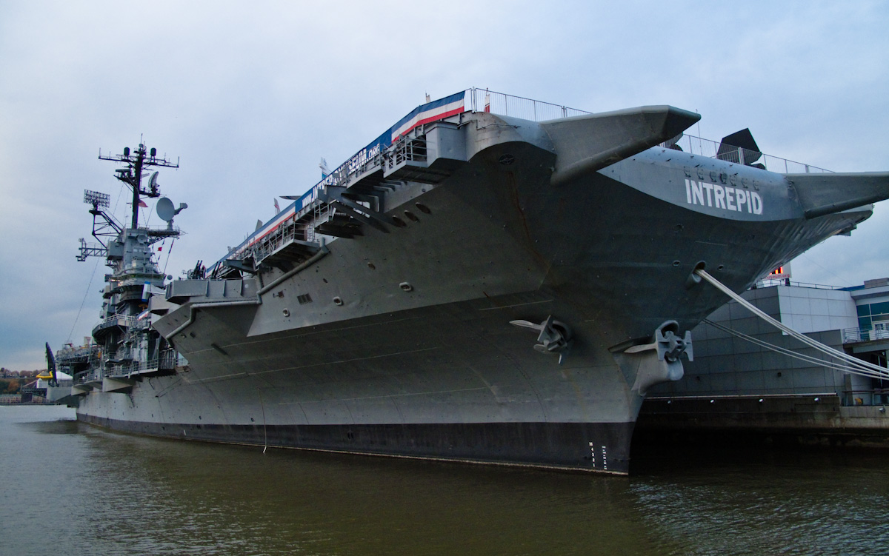
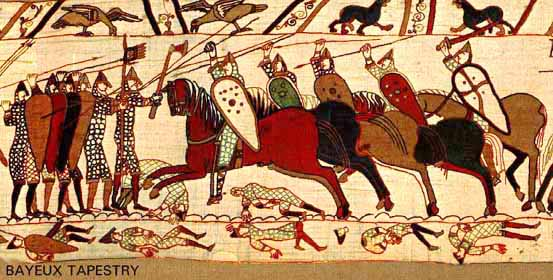
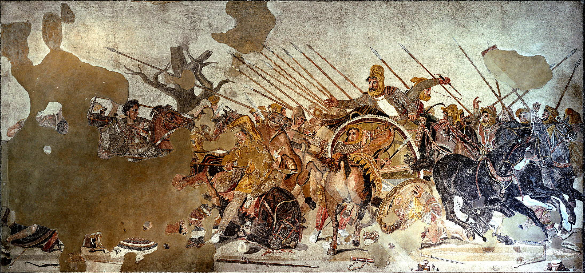
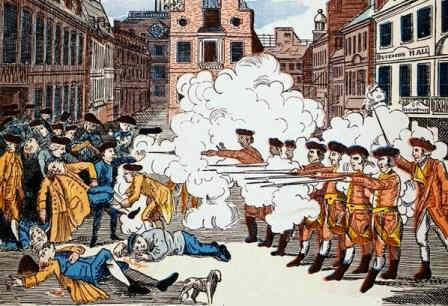
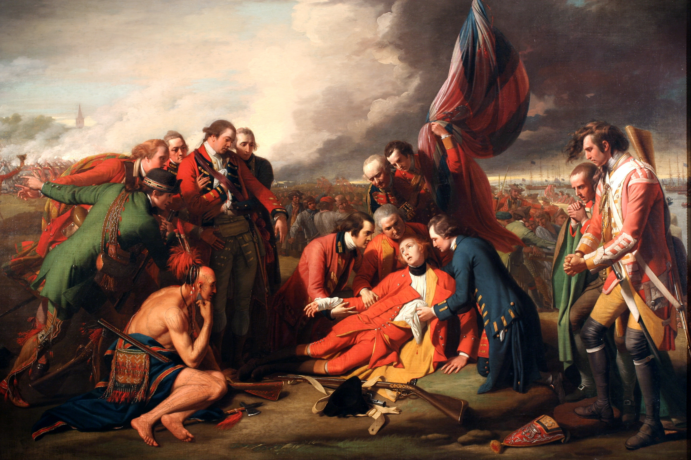
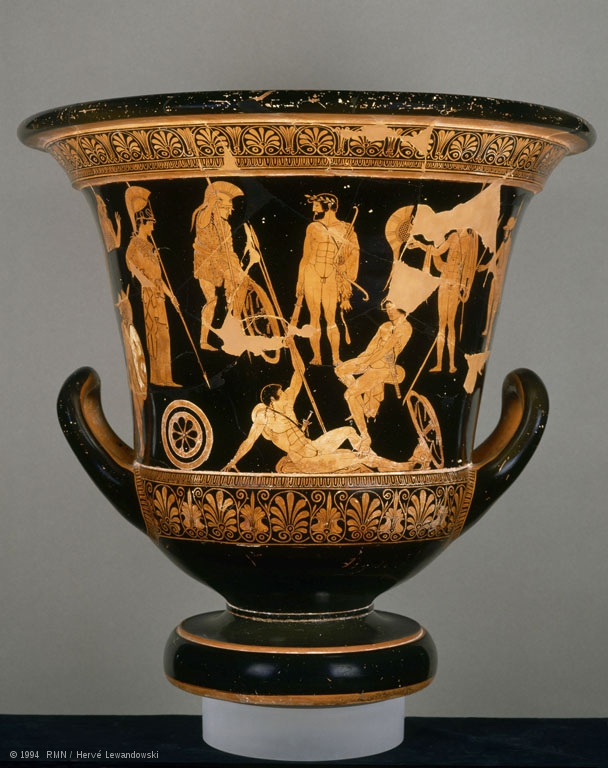

APAH Museum Project
Theme: Warfare
Curator: Kevin Yin
Mission Statement
The purpose of this museum is to help people realize what types of weapons were used from different time periods and to show how the work of art conveys warfare
Building
Having my works of art on the navy ship, intrepid, would be great. It relates to the works of arts by being a navy battleship
Bayeux Tapestry
Identification
Bayeux Tapestry Romanesque Europe. c. 1066-1080 C.E. Embroidery on linen
Description
The Bayeux Tapestry has been much used as a source for illustrations of daily life in early medieval Europe. It depicts a total of 1515 different objects, animals and persons . Dress, arms, ships, towers, cities, halls, churches, horse trappings, regal insignia, ploughs, harrows, tableware, possible armorial changes, banners, hunting horns, axes, adzes, barrels, carts, wagons, reliquaries, biers, spits and spades are among the many items depicted
Alexander Mosaic
Identification
Alexander Mosaic from the House of Faun, Pompeii Republican Roman. c. 100 B.C.E. Mosaic
Description
The artistic importance of this work of art comes at the subtle and unique artistic style that the artist employed in the making of the mosaic. The first major attribute of this great piece of artwork is the use of motion and intensity in the battle and the use of drama unfolding before the viewer's eyes to further the effect of glory in the mosaic
Boston Massacre
Identification
Boston Massacre printed by Paul Revere Picture
Description
This picture depicts gruesome factors after the British Soliders fired at american people. This image reminds us of the conflict that we, the US, had with Britain which lead to the American Revolution
The Death of General Wolfe
Identification
The Death of General Wolfe, 1770 Painted by Benjamin West Painting
Description
In this painting, it shows the death of General Wolfe. This work of art fits into the museum because in the background, it has thousands of soldiers clashing. This painting caught my eye because there the focus is a mournful event of Gerenal Wolfe dying while in the background, there are thousands of soldiers fighting. This painting is sad and very dramatic
Niobides Krater
Identification
Niobides Krater Anonymous vase painter of Classical Greece known as the Noibid Painter c. 460-450 B.C.E Clay, red-figure technique (white highlights)
Description
This vase depicts spears and shields which shows what types of weaponry is used back then.
The Oath of the Horatii